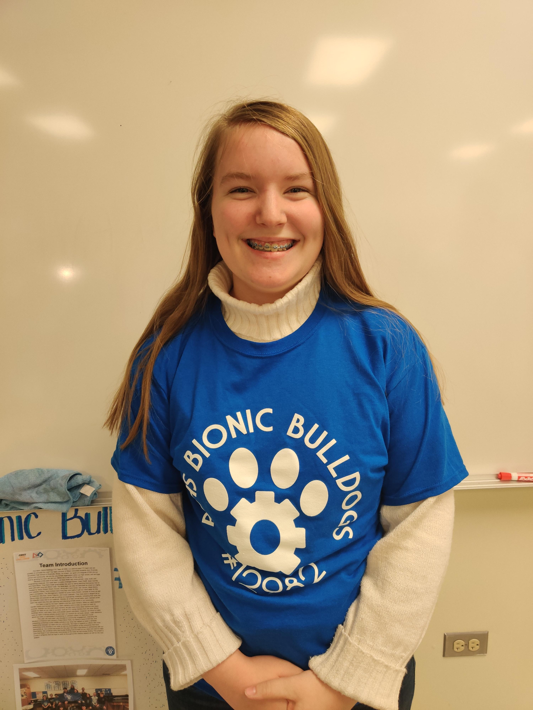
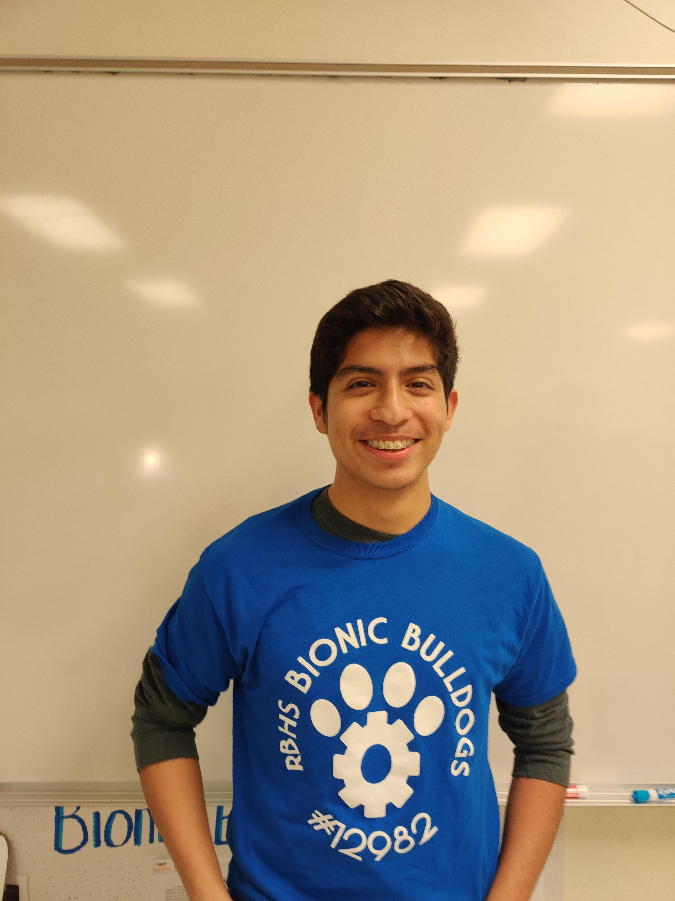
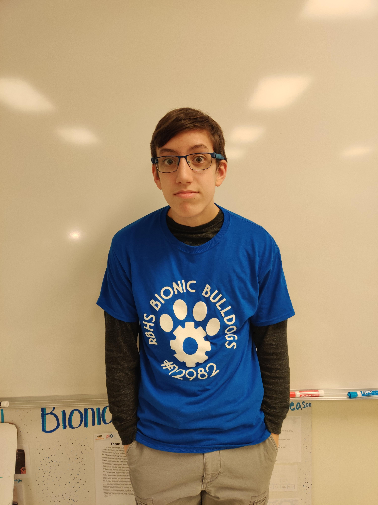
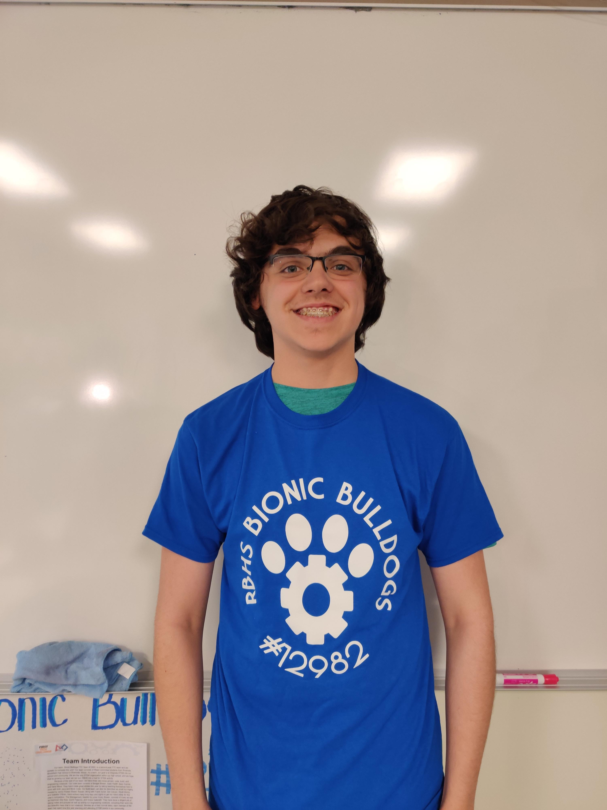
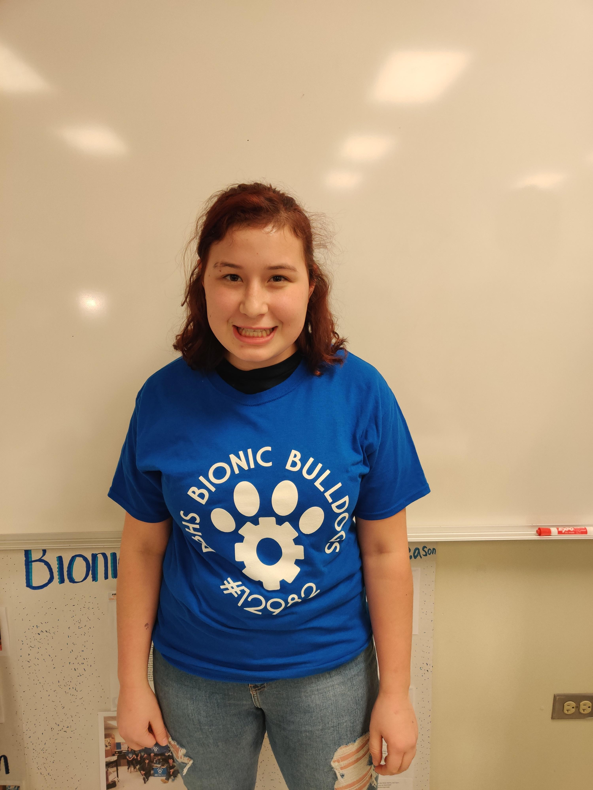
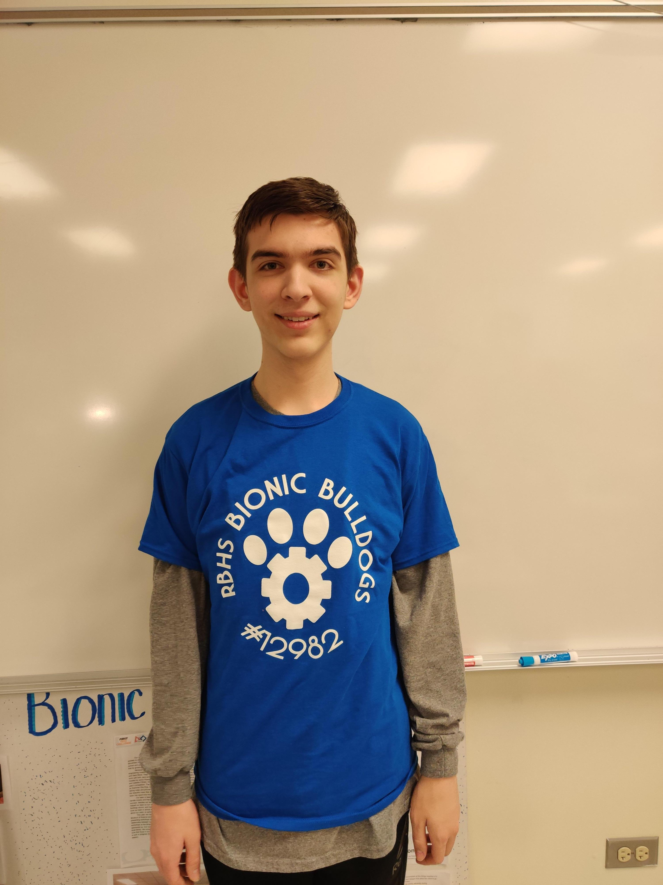
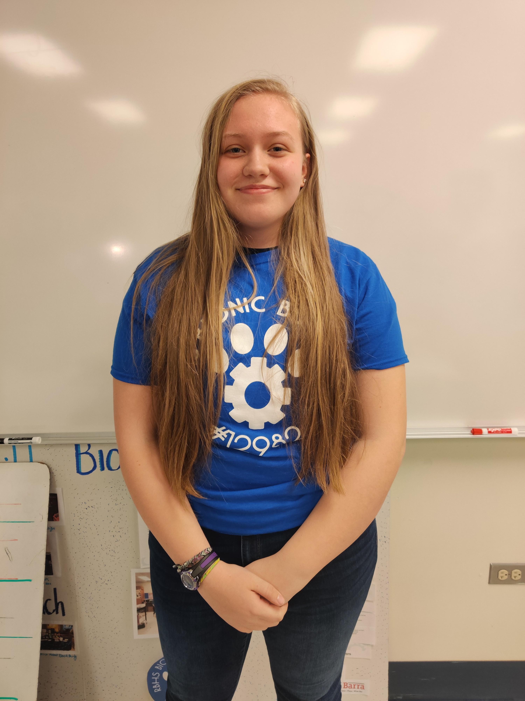
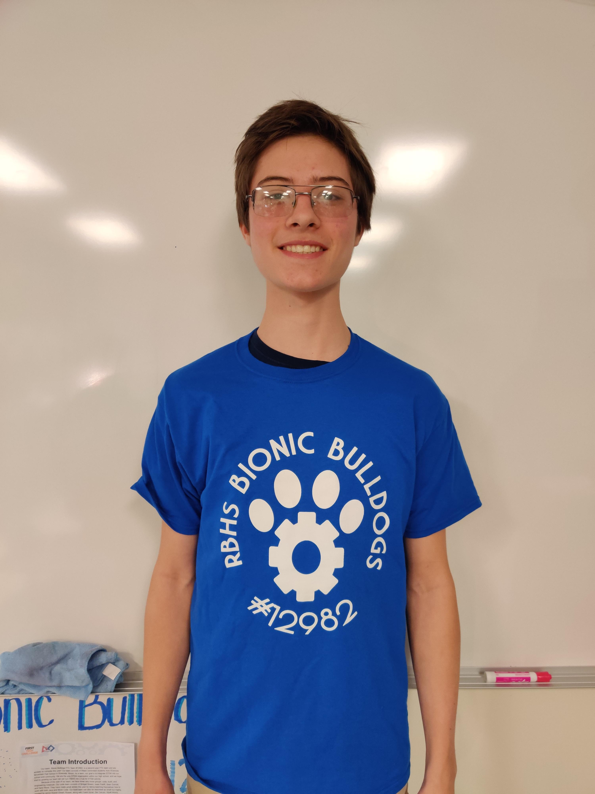
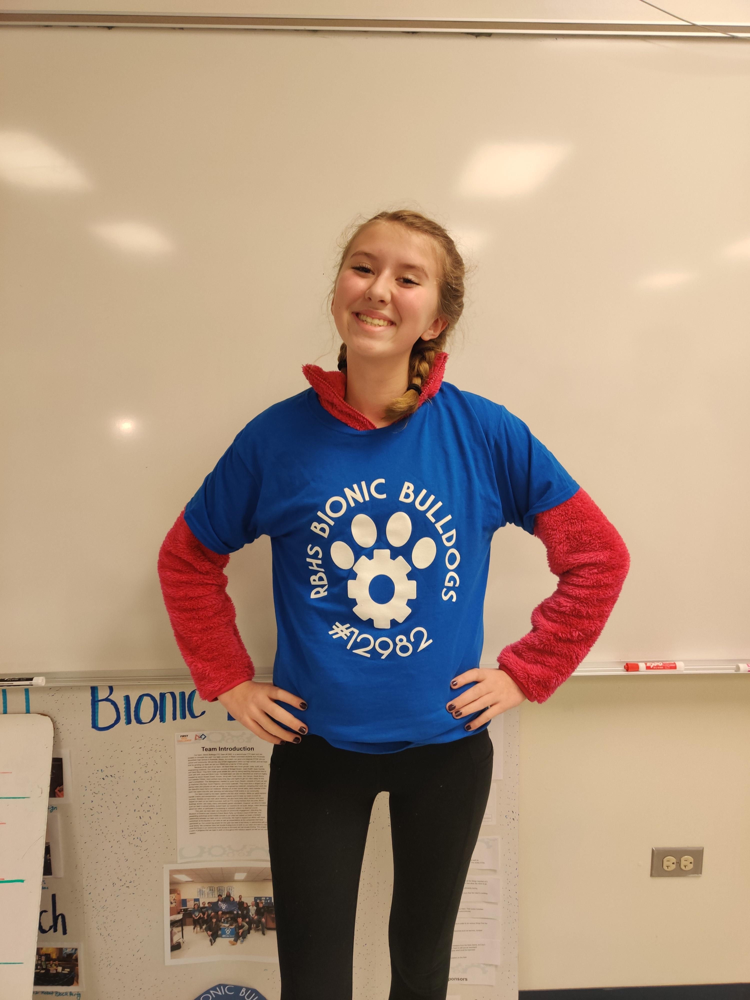

Meet the Bionic Bulldogs
Julian liked to code things when he was in middle school and loves that Bionic Bulldogs has extended his coding skills. Julian’s job as a coder is to make sure everything is ready for our competitions and tweak some codes. A little fun fact about Julian is that he started to code when he was in 5th grade and he really enjoyed it. He talks with other kids in this club and has made some of his closest friends in robotics.

This is Ella's second season with the robotics team, and she is thoroughly enjoying it! She has gotten to drive the robot at a competition and organize many fun events for the team. Outside of robotics, Ella has played lacrosse for six years and is involved with the theater department. She loves to draw and has the best handwriting for writing in the engineering notebook or on the whiteboard. Ella is currently looking for competitors in handwriting, as it gets very lonely on her pedestal of expo markers.

Isabella is a sophomore on the Bionic Bulldogs, this being her second year in robotics on the build team, also helping with outreach programs from time to time. Alongside robotics, she is also involved with music and art programs. Including working with traditional and digital art, experimenting with animation, working with audio technology in the theatre program, and being a violist in the school’s chamber orchestra. She would like to incorporate the skills she develops in robotics to her ambition of someday working in 2D/3D animation, or game design, as a professional career.

Sean has been doing robotics for five years and is excited to enter his third year of robotics at RB. As a Junior, Sean participates in track & field, competing in events such as pole vaulting, the 100m, 200m and 400m. He also plays soccer and plays the clarinet in the band. Sean loves the color burgundy, because "it's kinda like red but cooler". Sean enjoys robotics due to the opportunities it has given him to learn more about STEM, in turn, making him want to eventually attend MIT for computer science/electrical engineering. He can heel click at impressive heights. Most importantly, Sean enjoys taking long walks on the beach.

Outside of Robotics Zac likes to play sports, read, debate, and hang out with his friends. He plays Soccer, Wrestling, and Rugby. He likes to read fantasy and sci-fi but has started dabbling in non-fiction. His reading also includes some French literature because he is heavily invested in learning the language. Fun Fact: He is not related to Anthony Caruso. He is a member of the build team.

Sofia does many extracurriculars outside of school such as being a member of the madrigals choir, playing travel soccer all year, and is apart of two clubs in the morning (Girls Who Code and OLAS). In her free time she loves to read, play with her dog Koby, and bake. A fun fact about Sofia is that she learned Java in middle school where she participated in Robotics for three years and is excited to keep learning new languages in high school. But her heart belongs to both worlds, the coding and building team. This year she has embraced the building team because there are enough coders and is still loving it! She is now the handyman around her house and loves fixing and tinkering things. Robotics this year has taught her new things about the building aspect of the robot and using her brain more to think about design ideas. Sofia is elated to be part of the Robotics team this year!

Josh Nelson is a cooperative teammate and enjoys building different parts of the robot when requested. He has a creative mind and can come up with really good ideas when he puts his mind to it. He is also very friendly and enjoys having conversations with others. As well as being friendly, Josh works hard in school and gets good grades. He likes math and science more than any other subject, but still tries hard on the others. On the robotics team, he helps out wherever he can, although it is difficult for him to find a good place to help out. Overall, Josh contributes to the robotics team most by thinking of designs that would be most beneficial for the team to build on to the robot.

AJ's role on the robotics team is a builder. This is his first year in robotics and although he does not know much, he is striving to learn and be a help to the team. In his free time, he is usually on his computer on discord talking to friends or doing homework. He sometimes likes to be alone but also enjoys the comfort of others. This relates to his awkward but fun personality. Other than robotics, he is active in a band and loves playing the saxophone. He finds a lot of enjoyment especially in the marching season where he can get hyped and spirited for the games. He is a simple but enjoyable person to be around.

Outside of robotics Anna does MMA and it really taught her how to be a leader. Anna does pole vaulting as well. She also does photography looking at things through different points of view. On the robotics team Anna is a part of the building group. Being in robotics helped her decide she wants to major in biomedical engineering. She likes that robotics is very hands-on working through the problems.

Cole is a programmer on the RBHS Bionic Bulldogs robotics team. He writes code for both autonomous and usercontrol, but primarily works on the backend autonomous code. Outside of robotics, Cole enjoys programming, mainly in Python, as well as mathematics. He has taught himself several programming languages, and enjoys using what he knows in programming and math to solve problems in robotics and outside of robotics. He is also on RB's math team, and plays percussion in the RB Wind Ensemble and marching band. In his free time, Cole also likes to learn about machine learning, math, and cryptography.

Outside of robotics Addie is involved in music schooling, animal and environmental conservation and cooking/baking. She likes to drink a lot of tea, mainly fruit teas and has a small plant named Sunny. Addie spends a lot of my time learning at the zoo and really enjoys it. In the future, Addie is interested in biomedical engineering, environmental conservation and marine biology. She has created a great system to get extra Costco samples and knows how to make the most perfect tiramisu ever. She also thinks key lime pie is an abomination.

Zach is a member of the Riverside Brookfield High School robotics team, the Bionic Bulldogs. Specifically, he is a member of the coding team, designing programs to run on the robot and driver control software. Outside of robotics, he enjoys coding as well as physics, both of which interest him through books and projects. In addition, he enjoys reading fantasy and science fiction books on his own time. Zach also plays in the RB symphonic band as a saxophone and marches in the fall football season. A fun fact about Zach is that he owns two dogs and one cat.

Bridget is on the build part of robotics, but also helps out the other teams when needed. Bridget likes to spend time with her friends and play tennis. This past fall she was also a part of the tennis team at RB while still in robotics. She also enjoys watching movies, eating tacos and playing with her dog. In the future, Bridget plans to use her robotics skills with a career in the medical field. Bridget is very happy to be on the robotics team for her second year at RB and plans to continue in robotics for the rest of her high school career.
Luke is a freshman at RB. He is a builder on the team. He also hopes to be a driver. Last year, when he was in 8th grade, he got first in the Battle of the Bots, which is a fairly large VEX robotics tournament. Outside of robotics, he is a trombone in the RB marching band. In his free time, he likes to hang out with his friends. He also plays video games.
Isaac has been known by his fellow team members for his innate ability to not back down from a challenge. He is a pleasure to have on the team and is welcoming to new members. In addition, he participates by putting his years of programming skills to good use, being an essential member of the coding team as well as teaching other club members his skills. As well as teaching his fellow team members, he volunteers to introduce STEM opportunities at a local school. Although Isaac takes a logical approach to his teaching and future career as a computer scientist, he has an artistic side playing the clarinet, bass, and guitar after school with friends. He enjoys being with the team and has an everlasting love for each and everyone one of the members.
Ken focuses mainly on building the robot. Ken likes to play trombone, guitar, piano, and trumpet. Ken is a part of the RB band with many other robotics kids. Ken participates in multiple sports, such as swimming, track, cross country. Ken also plays soccer outside of school. Ken goes to hauser to mentor for the hauser robotics team. Ken loves to do all of these outside activities but always makes sure to have time for robotics.
Avery is a senior and has been involved in robotics for the past seven years (three years on her family’s FLL team, 4 years as captain of Bionic Bulldogs). Avery works to oversee the entire team, specifically the engineering notebook and our outreach initiative. When not buying snacks (Motts) for the team and obsessively writing on the whiteboard, Avery is involved in RB’s theater and music department. In college, Avery plans to study environmental engineering.